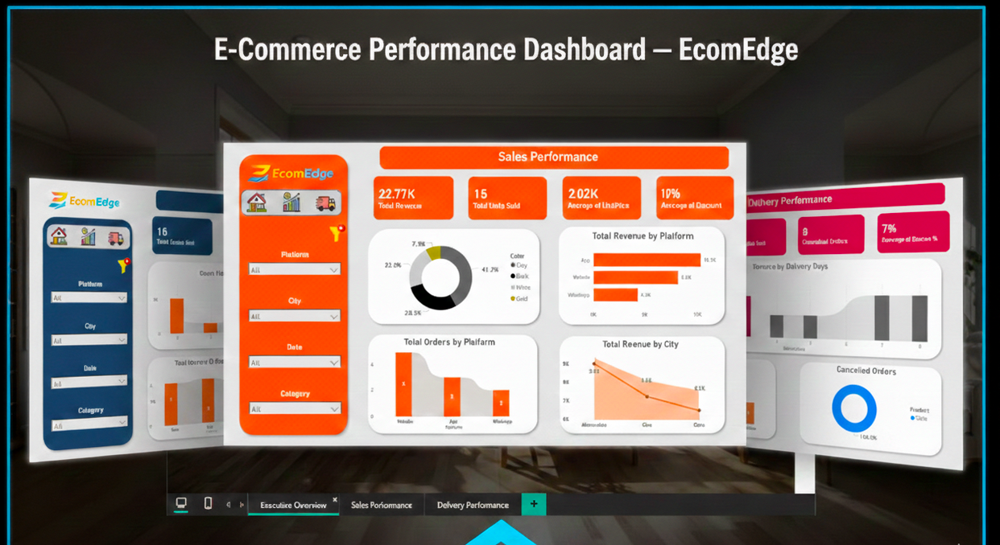
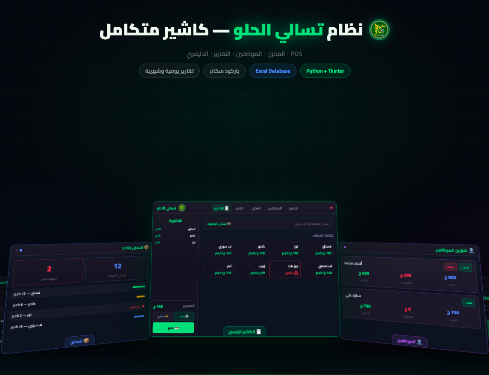
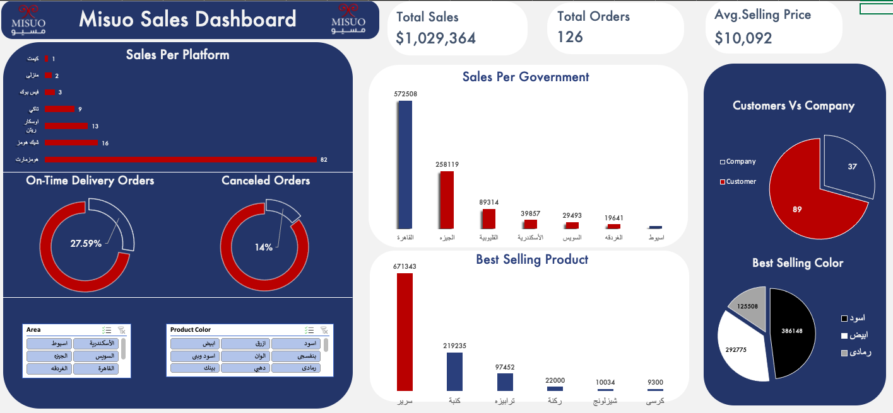

I specialize in transforming complex raw business data into actionable visual insights and automated operational solutions. Expert in building modern dashboards and local retail software.
DAX modeling, interactive visuals, and advanced insight distribution.
Desktop GUI architecture, data handling via Pandas & NumPy.
Relational database design, relational filtering, and structured storage.
Pivot charts, dynamic metrics calculation, and ETL processing.
Real-world data pipelines and interactive systems engineered for retail growth.

Consolidated high-volume multi-platform business operations into a single interactive system covering margins, revenue, and delivery delays.

A completely offline desktop POS engineered for snack and nut retail ecosystems, managing payroll, smart touch cashier features, and live stock tracking.

Transformed fragmented tabular inventory records into centralized dashboards mapping sales distribution by governorates and top colors.
Business Problem: Fragmented platform tracking made it hard to control cancellation trends and real-time revenue performance.
Dashboard Architecture: Contains Executive View (KPIs), Sales View (Platform performance), and Delivery View (Delay correlations).
Key Insights: Delivery latency directly triggers rapid order drops; revenue is highly concentrated within certain top-performing hub locations.
Recommendations: Restructure logistics pipelines in critical high-demand cities to preserve systemic product margins.
Core Goal: Provide local stores with lightweight offline database capabilities requiring no complex internet reliance.
System Modules: Touch Screen Interface, SQLite Transaction Logging, Payroll Tracking (Vacations/Deductions), and Instant Invoice Generation.
Tech Advantage: Engineered in clean Python using Pandas for efficient structured calculation, packaged as a lightweight standalone application (.EXE).
Business Problem: Decision makers relied on slow tabular analysis, delaying structural identification of seasonal consumer patterns.
Data Engineering: Advanced tabular cleaning, designed custom calculated KPIs, and structured dynamic filtering for regional trends.
Core Insights: Found extreme regional demand spikes for specific product colors, alongside stagnant inventory categories despite high volume availability.